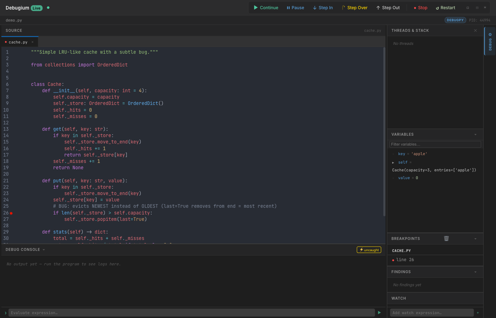

Real-time web UI for Python, JavaScript, and Rust debuggers — with LLM integration via the Model Context Protocol.

Works on macOS and Linux. Windows binaries available on the releases page.
Source viewer with syntax highlighting, breakpoint gutters, execution arrow, tabbed file navigation.
Expose your debug session as MCP tools for Claude or any AI. Let the LLM inspect variables, set breakpoints, and annotate the UI.
F5 continue, F10 step over, F11 step in, Shift+F11 step out. Full keyboard control without leaving your browser.
Expand nested objects, filter by name, double-click to edit values inline. Diff highlighting shows what changed.
Debug multiple programs at the same time. Each session has its own panels, breakpoints, and call stack.
Toggle with Ctrl+D or the toolbar button. Preference is saved across sessions.
Add Debugium to your Claude config and let the LLM step through your code, inspect state, and post findings directly into the UI.
| Tool | What it does |
|---|---|
| get_debug_context | Paused location, locals, call stack, and a source window |
| set_breakpoint | Set a breakpoint at file:line, with optional condition |
| dap_request | Send any raw DAP command to the adapter |
| get_console_output | Read recent stdout/stderr from the debuggee |
| list_sessions | Discover all running debug sessions |
| annotate | Add a gutter annotation visible in the source editor |
| add_finding | Post a structured finding to the Findings panel |
| step_until | Step until a condition expression becomes true |
| run_until_exception | Continue until an exception is raised |